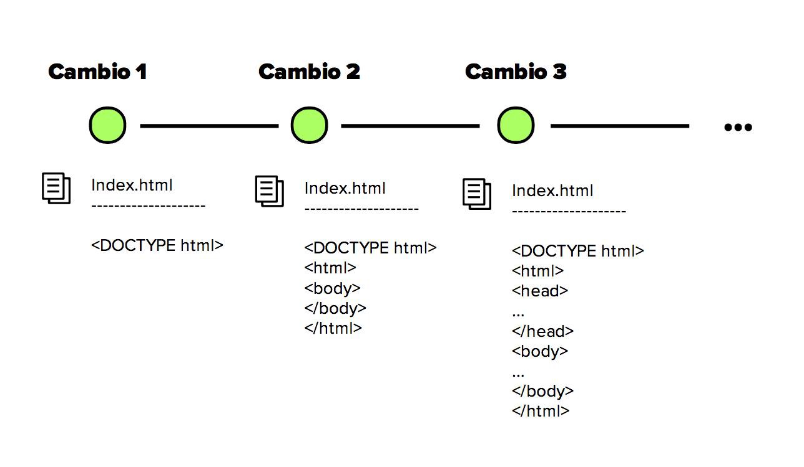

Sistema de control de versiones

Durante los 70’s hasta inicios del 2000, muchos profesionales (principalmente de software) se tuvieron que enfrentar a desarrollar proyectos de forma muy pesada.
Nos encontrábamos con 3 problemas:
-
Proyectos difíciles de gestionar y liderar
-
Riesgos a sobrescribir con mi código el avance formal del equipo
-
La centralización y poca probabilidad de trabajar remotamente
La llegada de Git (2005) revolucionó la forma en cómo
gestionamos código, la comunicación y colaboración con profesionales en proyectos
de software, incluidos web. Creado por Linus Torvalds, hasta hoy ha tenido un gran auge
implementándose en startups y empresas relacionadas con el sector tecnológico por su seguridad, comodidad
y velocidad. A pesar de que los demás SCV siguen utilizándose hoy en día, es importante destacar que Git ha
hecho y seguirá con un increíble esfuerzo por posicionarse fuertemente en el mercado. Sostenido por un gran
y prestigioso número de empresas, Git además cuenta con el apoyo de su comunidad principal GitHub, la cual es
enorme y crece día a día.
Más Informacion